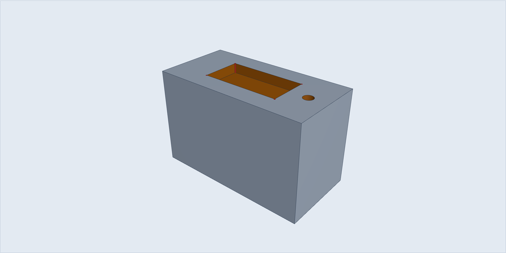
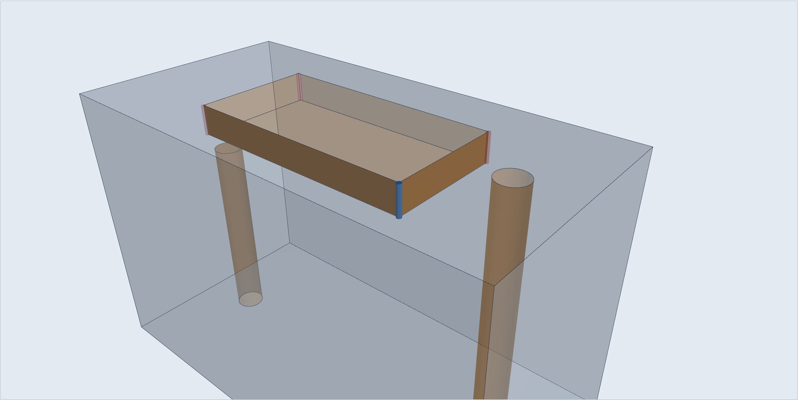

The part shows here once it's read.
Your files are analysed on this computer and deleted straight after. Nothing is kept.
Analysing report_sample.step…
Your files are analysed on this computer and deleted straight after. Nothing is kept.
No part loaded.
Error: This is not a STEP file this tool can read
Choose another file, or try again.
Your files are analysed on this computer and deleted straight after. Nothing is kept.

F1 +1 F4 F5 F6 F7 +1
F4 FIXScore is count × weight. Every weight is an estimate. No time or dollars yet.
Hole depth, hole size, corner radius, pocket depth, undercut, thin wall, access, looks turned.